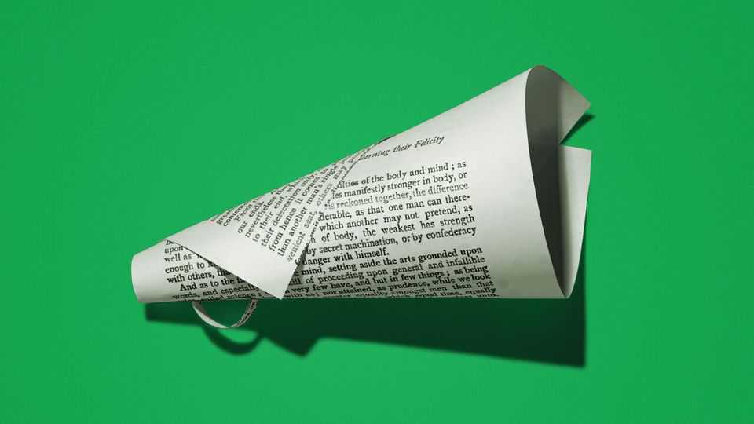

The new age of the orator
As reading declines, ideas are spreading not by text but by spoken word

Sep 10th 2026
ONE YEAR after Charlie Kirk was shot dead in mid-flow, the conversation he began is continuing. On the anniversary of his murder, September 10th, allies of the conservative campaigner and debater are holding a rally five minutes’ walk from the scene of his killing at Utah Valley University. The event is the latest campus gathering organised by the group he founded, Turning Point USA, which seeks to help young liberals see the light (or, failing that, enrage them for clicks).
The ghastly circumstances of Kirk’s death—murdered in public, allegedly by a young man who will shortly stand trial—turbocharged his fame. But the movement he began is part of a bigger trend. As audiences ditch books and newspapers in favour of video clips and social feeds, the world is entering a new age of the orator.
Ideas that were once disseminated by headlines and columns are now being conveyed by TikToks and podcasts. As people spend more time absorbed in their screens and their AirPods, the human voice is making a comeback. That has consequences for how people communicate—and perhaps for the kinds of ideas that spread.
Kirk’s approach, sitting at a table beneath a sign challenging passersby to “Prove me wrong”, was reminiscent of a much earlier political culture. In the days when manuscripts were expensively copied out by scribes and read by a tiny elite, people wanting to share news or ideas had to do so orally. Only with the invention of printing and the spread of literacy did the masses start to get their information by text. Those seeking to sway others put away their soap-boxes and loudhailers and started writing pamphlets and articles instead.
Now there are signs that the 500-year trend towards text is sliding into reverse. People everywhere are sounding the alarm about a decline in reading. Parents struggle to cajole their children to pick up a book; professors despair that students cannot finish reading lists. Once they are adults, and no longer nagged by teachers or parents, many people stop reading altogether, relaxing not with a paperback but a vertical video feed. More than half of American adults say they have not read a single book for pleasure in the past year.
The panic is summed up in “The New Dark Ages”, a polemic by James Marriott, a bookish Times journalist. At 33, Mr Marriott is a contemporary of Kirk, though he has adopted media habits from another era, forgoing a smartphone and writing drafts on an electronic typewriter. He rounds up the evidence that reading is in decline, placing most of the blame on smartphones, “predators of our attention”. “Dickens wrote in the reasonable belief that [his work] might be the most absorbing entertainment in your house—hence the average Dickens novel being about 800 pages,” writes Mr Marriott (who tucked into “Little Dorrit” for light relief while writing his book).
Drawing on Walter Ong, a cultural historian, Mr Marriott explains how writing allowed cultures to “externalise” their thoughts, making way for more complex ideas and allowing them to be laid open to dissection. Ong wrote that sophisticated mental processes, like logical reasoning and abstract categorisation, derive “not simply from thought itself but from text-formed thought”. Whereas oral delivery often employs a “backlooping” structure, the speaker rambling and repeating as they hone their argument on the go, writing allows for logically structured reasoning.
As audiences slip back to oral media, some of those pre-literate traits are back in fashion. The backlooping style, which is tedious on the page but helps spoken ideas to stick, has made a return thanks to the podcast: Joe Rogan, the world’s top podcaster, often natters away with his guests for three hours. Kirk was a master of the lightning rejoinder that on paper would be unpersuasive, but when delivered before a hyped-up crowd was an oratorical knockout punch. “Take responsibility for your orgasms, and stop eliminating people smaller than you!” he told a flummoxed pro-choice student in a debate on abortion a couple of weeks before his murder.
The oral turn also helps explain the success of politicians like Donald Trump, who by conventional standards is a dreadful communicator. Rather than construct arguments, Mr Trump has a tendency to pile up assertions: “We’ve achieved more than any administration in the history of our country…There’s no country in history that’s ever even been close…There’s never been anything like it, what’s happening in our country,” he said in a speech earlier this month. Such words defy belief when transcribed, yet Mr Trump has proved to be one of the great communicators of his time. Some have even compared his “tagging” of enemies—“crooked Hillary”, “sleepy Joe” and so on—to Homer, who used epithets like “ox-eyed Hera” and “crooked-counselled Cronos” to lodge characters in audiences’ minds.
All this is interesting for linguists. But it may have policy implications, too. Whereas written argument copes well with abstract ideas, oral delivery relies more on the concrete and the vivid. Sometimes this translates to actual policies. In his desire to project toughness on immigration Mr Trump conjured the idea of an actual wall—and so one was (partly) built. From Nayib Bukele’s mega-prison in El Salvador to Narendra Modi’s Hindu temple in Ayodhya, politicians who deal in concrete symbols as answers to abstract problems sometimes have to build them.
Some of the worry about the decline of reading is overdone. Anyone pining for the good old days of newspapers should read some from the 19th century, before advertisers and the need to appeal to mass readership forced journalists and editors to make fewer things up. Angry videos on social media can lead to online witch-hunts; starting in the 15th century, angry screeds published on the new presses fomented some actual witch-hunts. You only need go back a decade or so, to a time when Twitter was primarily a text-based platform, to see that written communication does not always lead to calm and nuanced debate.
Yet the drop-off in reading is disconcerting. As fewer people summon the patience to sit down with a long text, fewer will absorb the ideas that are conveyed best in writing. Great orators incite the passions, but great writers stir the mind. Kirk observed that “When people stop talking, really bad stuff starts.” He was all too right. But how much worse will it become as they stop reading? ■